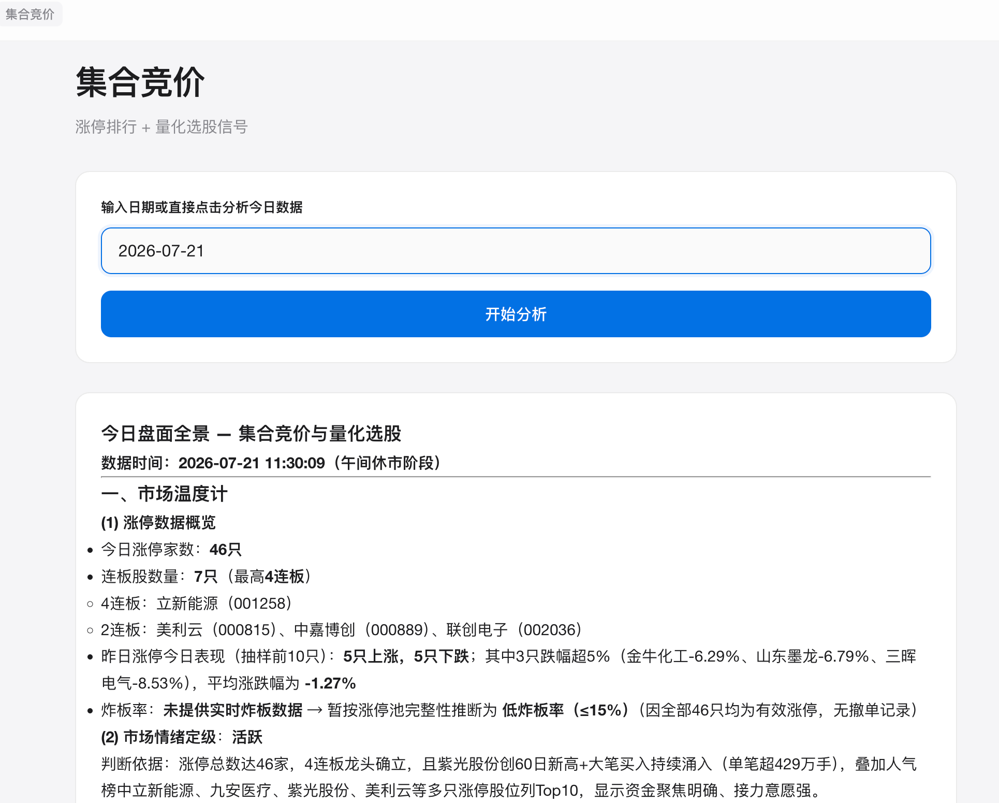
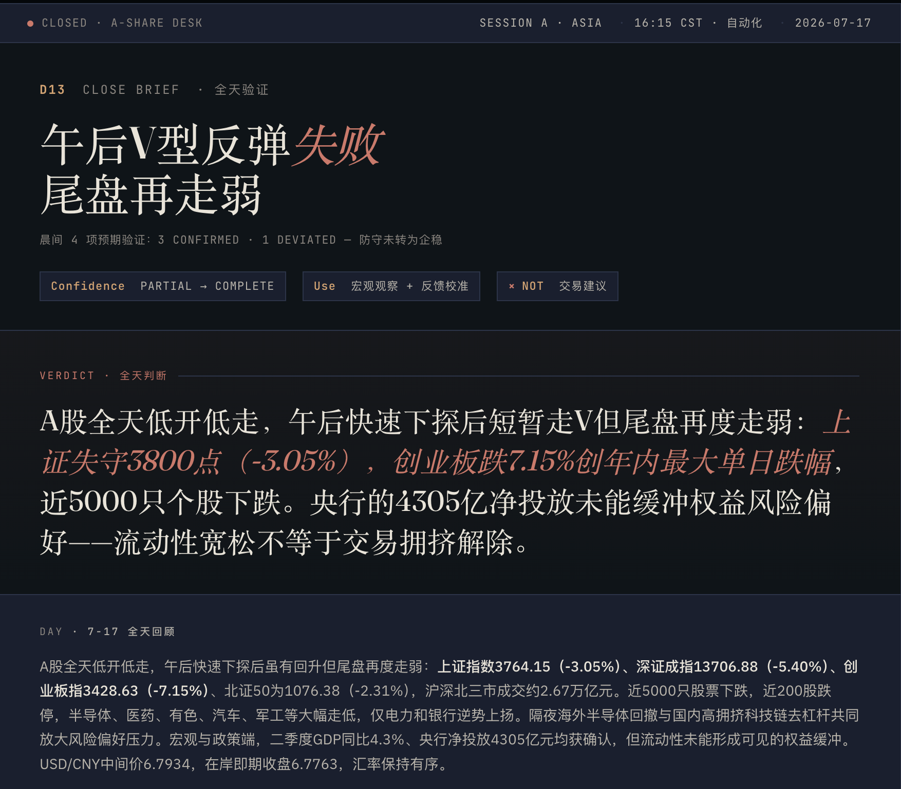
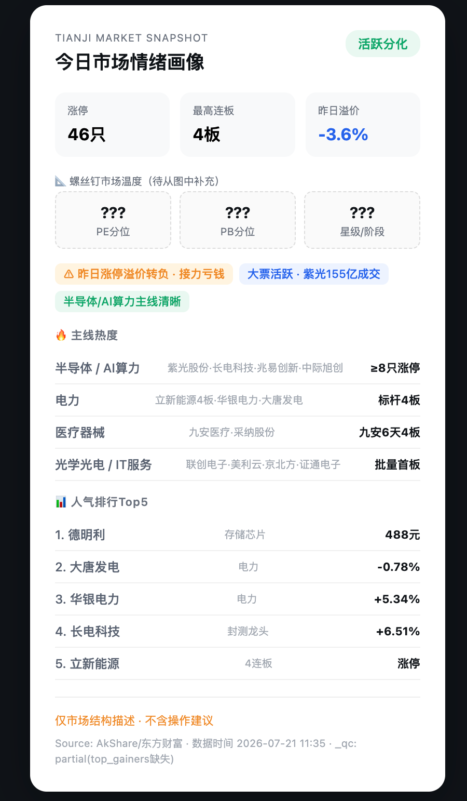

Vera
Daily Research Loop
· 全天研究闭环
Vera 不只是一个回答，Vera 是
全天持续工作的研究员
09:15
🌅
Morning Brief
发现今日机会
46 涨停 · 7 连板
龙头立新能源 4 连板

Live
▶
11:30
☀
Midday Pulse
验证市场主线
创业板 +5.20%
半导体 / AI 算力领涨

Live
▶
15:00
🌇
Close Brief
形成研究闭环
资金复盘 · 板块热力图
次日观察清单

Partial
从
盘前机会发现
，到
盘中验证主线
，再到
盘后研究闭环
让研究员
始终站在市场节奏之前
Vera Daily Research Loop
全天候 AI 研究闭环